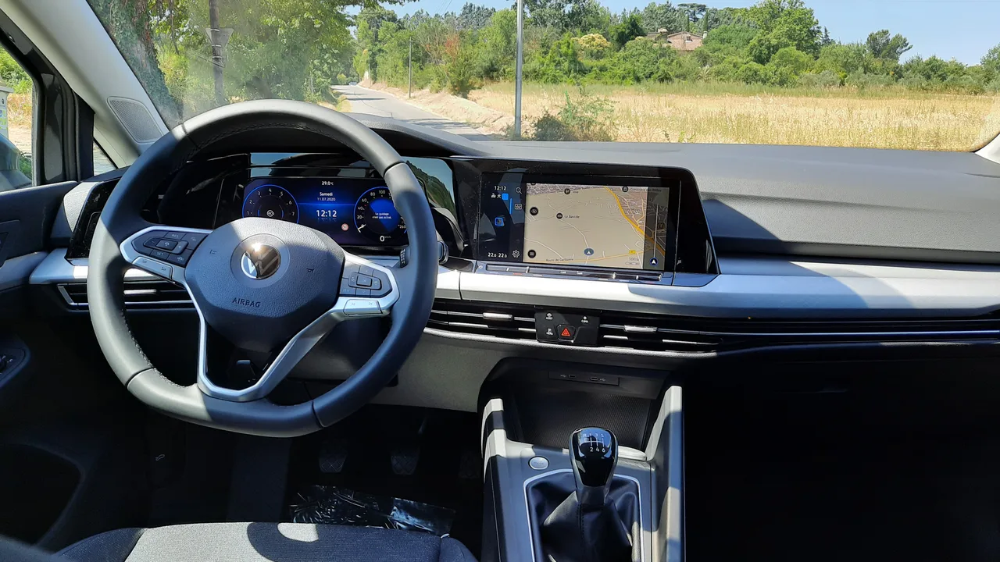

▲ 폭스바겐 골프 8세대 — 2.0 TDI 프레스티지 트림 기준 신차가는 4,140만원이지만, 인증중고 시장에서는 2,890만원부터 매물을 찾을 수 있다
폭스바겐 골프 8세대 2.0 TDI 프레스티지가 인증중고 시장에서 예사롭지 않은 가격을 형성하고 있습니다. 신차 가격 4,140만원인 이 차가 2024년식 기준 2,890만원부터 3,300만원 사이에서 거래되면서, 최대 1,250만원까지 감가된 매물을 만날 수 있습니다. 준중형 해치백치고는 다소 높았던 신차 가격이, 중고 시장에서는 오히려 경쟁력 있는 구간으로 내려온 셈입니다.
1. 신차급 인증중고, 1,250만원까지 빠졌다
이 차가 화제가 된 첫 번째 이유는 감가폭입니다. 신차 가격이 4,140만원인 골프 2.0 TDI 프레스티지가, 2024년식 인증중고 기준 2,890만원부터 매물이 형성돼 있습니다. 최상단인 3,300만원짜리 매물과 비교해도 최소 840만원, 최저가 매물 기준으로는 최대 1,250만원까지 감가액이 벌어집니다. 연식이 2024년으로 비교적 최근인 점을 감안하면, 인증중고 특유의 '신차급 상태에 낮아진 가격'이라는 조합이 정확히 들어맞는 사례입니다. 인증중고는 제조사 또는 공식 딜러가 일정 기준의 점검·보증을 거쳐 판매하는 방식이라, 일반 중고차보다 상태에 대한 신뢰도가 높다는 점도 이런 가격이 주목받는 배경입니다.
▲ 폭스바겐 골프 8세대 후면부 — 해치백 구조로 2열 좌석을 접으면 세단보다 넉넉한 적재공간을 확보할 수 있다
2. 150마력 디젤, 고속도로에서 21km/L를 넘긴다
가격만큼 눈에 띄는 것이 연비입니다. 2.0L 4기통 디젤 터보 엔진이 150마력과 최대토크 36.7kg·m을 내고, 7단 듀얼클러치 변속기와 맞물려 0-100km/h 가속은 8.4초를 기록합니다. 스포츠성을 앞세운 세팅은 아니지만, 일상 주행에는 충분한 힘입니다. 정작 이 차의 진짜 강점은 연비입니다. 복합연비 17.8km/L도 준중형 해치백치고 우수한 수치인데, 고속도로연비는 21.3km/L까지 올라갑니다. 장거리 출퇴근이나 자주 고속도로를 타는 운전자라면, 이 정도 효율은 유류비 부담을 상당히 덜어줄 수 있는 수준입니다.
| 항목 | 사양 |
|---|---|
| 엔진 | 2.0L 4기통 디젤 터보 |
| 최고출력·최대토크 | 150마력, 36.7kg·m |
| 변속기 | 7단 듀얼클러치 |
| 0-100km/h | 8.4초 |
| 복합연비 | 17.8km/L |
| 고속도로연비 | 21.3km/L |
| 신차 가격 | 4,140만원 |
| 인증중고 가격(2024년식) | 2,890만~3,300만원 |

▲ 폭스바겐 골프 8세대 실내 — 디지털 계기판과 센터 디스플레이를 갖춰 준중형 해치백치고 완성도 높은 인포테인먼트를 제공한다
3. 세단보다 넉넉한 적재공간, 해치백의 실용성
차체 크기는 전장 4,285mm, 전폭 1,790mm, 전고 1,455mm로 준중형급에 속합니다. 다만 세단이 아닌 해치백 구조라는 점이 실사용성에서 차이를 만듭니다. 2열 좌석을 접으면 트렁크로 이어지는 공간이 통으로 열리면서, 비슷한 체급의 세단보다 짐을 싣기에 훨씬 유리합니다. 캠핑·차박까지는 아니더라도, 여행이나 대형 짐을 자주 옮겨야 하는 소비자에게는 이런 해치백 특유의 적재 유연성이 실질적인 장점으로 작용합니다.
4. 지금 이 가격, 계속 유지될까
이 정도의 감가폭이 형성된 데는 몇 가지 요인이 겹쳐 있는 것으로 보입니다. 수입 디젤 해치백이라는 세그먼트 자체가 국내에서 점점 줄어드는 수요를 갖고 있고, 친환경차 전환 흐름 속에서 디젤 모델의 인기가 전반적으로 하락하는 추세도 영향을 미쳤을 가능성이 있습니다. 다만 이런 요인들은 오히려 지금 이 가격에 구매하려는 소비자에게는 유리하게 작용합니다. 인증중고 매물이라는 점에서 상태에 대한 리스크가 상대적으로 낮고, 신차 대비 4분의 1 가까이 저렴해진 가격에 여전히 우수한 연비와 실용성을 누릴 수 있기 때문입니다. 다만 향후 매물 소진 속도나 추가 물량 유입 여부에 따라 이 가격대가 계속 유지될지는 지켜볼 필요가 있습니다.

▲ 중고차 매매단지 — 인증중고 매물은 딜러사별 보증 범위가 다를 수 있어 구매 전 확인이 필요하다
5. 구매 전 체크리스트
신차 대비 1,000만원 넘게 빠진 가격에, 고속도로 연비 21km/L를 넘기는 디젤 해치백이라는 조합은 흔치 않습니다. 다만 인증중고 특성상 매물이 한정적일 수 있는 만큼, 관심이 있다면 가격 변동 추이를 지켜보며 서두를 필요가 있습니다.